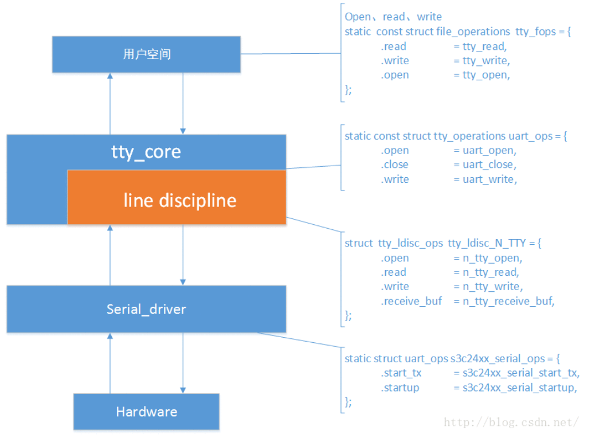

Linux内核中，串口驱动的代码做的已经非常完善，不需要用户去自己去格外添加什么，在/driver/tty下，包含了串口驱动的所有代码。
Linux内核为了支持不同类型的CPU对应串口地址，采用了platform总线机制，用户只需要添加platform_device的相关信息，就可以使能对应cpu的串口。
对于platform总线串口驱动和设备的匹配，只是整个tty驱动的一部分，也可以说，是震整个tty驱动的最底层部分。

先给出一个比较简单的图解，给出的是文件操作函数的部分，其实，这往往也是最重要也是最难的部分。
我们从核心层tty_core开始分析：
在/tty/serial/samsung.c中，module_init函数注册了一个uart_driver结构体：
ret = uart_register_driver(&s3c24xx_uart_drv);
结构体s3c24xx_uart_drv也定义在这个文件中：
static struct uart_driver s3c24xx_uart_drv = {
.owner = THIS_MODULE,
.driver_name = "s3c2410_serial",
.nr = CONFIG_SERIAL_SAMSUNG_UARTS, 值为3，
.cons = S3C24XX_SERIAL_CONSOLE, 这也是一个结构
.dev_name = S3C24XX_SERIAL_NAME, "ttyS"
.major = S3C24XX_SERIAL_MAJOR, 204
.minor = S3C24XX_SERIAL_MINOR, 64
};
再看看注册函数定义在serial_core.c中：
int uart_register_driver(struct uart_driver *drv)
{
struct tty_driver *normal;
int i, retval;
drv->state = kzalloc(sizeof(struct uart_state) * drv->nr, GFP_KERNEL);
if (!drv->state)
goto out;
normal = alloc_tty_driver(drv->nr);
drv->tty_driver = normal;
normal->owner = drv->owner;
normal->driver_name = drv->driver_name;
- normal->name = drv->dev_name;
normal->major = drv->major;
normal->minor_start = drv->minor;
normal->type = TTY_DRIVER_TYPE_SERIAL;
normal->subtype = SERIAL_TYPE_NORMAL;
normal->init_termios = tty_std_termios;
normal->init_termios.c_cflag = B9600 | CS8 | CREAD | HUPCL | CLOCAL;
normal->init_termios.c_ispeed = normal->init_termios.c_ospeed = 9600;
normal->flags = TTY_DRIVER_REAL_RAW | TTY_DRIVER_DYNAMIC_DEV;
normal->driver_state = drv;
tty_set_operations(normal, &uart_ops);
for (i = 0; i < drv->nr; i++) {
struct uart_state *state = drv->state + i;
struct tty_port *port = &state->port;
tty_port_init(port);
port->ops = &uart_port_ops;
port->close_delay = 500; /* .5 seconds */
port->closing_wait = 30000; /* 30 seconds */
tasklet_init(&state->tlet, uart_tasklet_action,
(unsigned long)state);
}
retval = tty_register_driver(normal);
}
这个函数主要做了如下事情：
- 为uart_driver的state域分配大小为uart_state*nr的空间。
- 分配tty_driver结构，并将uart_driver的owner/dev_name/major/minor/nr赋值给tty_driver,将自身地址保存到tty_driver中。
- 设置tty_driver的ops域为uart_ops，这是核心层的file_operation结构。
- 初始化uart_driver->uart_state[nr].tty_port域，包括等待队列，ops域为uart_port_ops。
- 调用tty_register_driver函数（定义在tty/tty_io.c中）注册tty_driver结构，函数静态申请主次设备号，并为tty_driver的ttys域和termios域分配内存，注册tty_driver->cdev域到内核，绑定cdev和ops（tty_ops)结构，并将tty_driver添加到全局链表tty_driver中。
- 在proc文件系统中添加相应信息。


这就是整个tty_core层所做的事，接下来是platform总线设备驱动匹配过程：
tty/serial/s3c2440.c
module_init调用函数s3c24xx_serial_init函数（定义在samsung.c中），该函数会注册平台驱动，平台驱动结构体：
static struct platform_driver s3c2440_serial_driver = {
.probe = s3c2440_serial_probe,
.remove = __devexit_p(s3c24xx_serial_remove),
.driver = {
.name = "s3c2440-uart",
.owner = THIS_MODULE,
},
};
位于平台设备链表和平台驱动链表的结构通过name域s3c2440-uart匹配成功会调用s3c2440_serial_probe函数->s3c24xx_serial_probe函数（定义在samsung.c中）
int s3c24xx_serial_probe(struct platform_device *dev,
struct s3c24xx_uart_info *info)
{
struct s3c24xx_uart_port *ourport;
int ret;
......
ourport = &s3c24xx_serial_ports[probe_index];
probe_index++;
......
ret = s3c24xx_serial_init_port(ourport, info, dev);
......
uart_add_one_port(&s3c24xx_uart_drv, &ourport->port);
platform_set_drvdata(dev, &ourport->port);
ret = device_create_file(&dev->dev, &dev_attr_clock_source);
......
ret = s3c24xx_serial_cpufreq_register(ourport);
......
}
这个函数主要工作：
- 结构体s3c24xx_serial_ports是s3c24xx系列cpu共用的结构：
static struct s3c24xx_uart_port s3c24xx_serial_ports[CONFIG_SERIAL_SAMSUNG_UARTS] = {
[0] = {
.port = {
.lock = __SPIN_LOCK_UNLOCKED(s3c24xx_serial_ports[0].port.lock),
.iotype = UPIO_MEM,
.irq = IRQ_S3CUART_RX0,
.uartclk = 0,
.fifosize = 16,
.ops = &s3c24xx_serial_ops,
.flags = UPF_BOOT_AUTOCONF,
.line = 0,
}
...
}
por域中包含了最底层文件操作的函数实现，直接操作硬件的函数集合数据结构s3c24xx_serial_ops。
- probe函数将dev和s3c24xx_serial_ports结构提供的信息包括硬件信息，中断等以及底层操作函数都保存到结构s3c24xx_uart_port->uart_port中， uart_port->dev域为platform_device，由函数s3c24xx_serial_init_port实现。
- 调用uart_add_one_port函数，将s3c24xx_uart_port->uart_port域与uart_driver类型结构体s3c24xx_uart_drv绑定。结构uart_driver->state域我们在核心层给它分配了内存，但是一直没用到，在这里，将uart_driver->state->uart_port=uport，实现uport绑定到uart_driver。
- 调用tty_register_device函数， device_create创建设备节点。


在uart_register_driver函数中，会注册cdev到内核，随后platform总线匹配调用probe函数，最后会在/dev下生成”ttyS0“设备。
接下来会分析ops中的函数的层次调用。
先给出一张图：